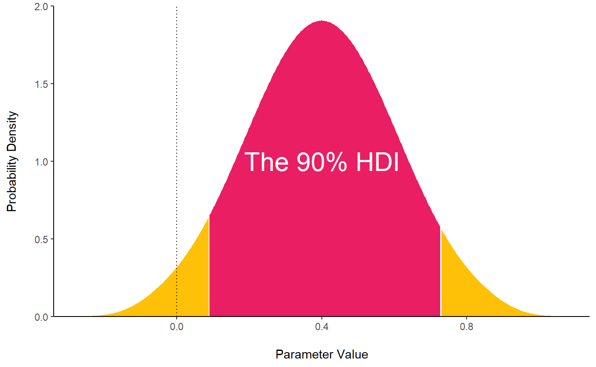

The Bayesian Framework
Why use the Bayesian Framework?
In short, because it’s:
- Better
- Simpler
- Superior
- Preferable
- More appropriate
- More desirable
- More useful
- More straightforward
- Makes more sense
Put textually :
Reasons to prefer this approach are reliability, better accuracy in noisy data, better estimation for small samples, less prone to type I error, the possibility of introducing prior knowledge into the analysis and, critically, results intuitiveness and their straightforward interpretation (Andrews & Baguley, 2013; Etz & Vandekerckhove, 2016; Kruschke, 2010; Kruschke, Aguinis, & Joo, 2012; Wagenmakers et al., 2018). Indeed, in the frequentist view, the effects are fixed (but unknown) and data are random, while the Bayesian inference calculates the probability of different effect values (called the “posterior” distribution) given the observed data. Bayesian’s uncertainty can be summarized, for example, by giving a range of values on the posterior distribution that includes 95% of the probability (the 95% Credible Interval). To illustrate the difference, the Bayesian framework allows to say “given the observed data, the effect has 95% probability of falling within this range”, while the Frequentist less straightforward alternative (the 95% Confidence Interval) would be “there is a 95% probability that when computing a confidence interval from data of this sort, the effect falls within this range”. In general, the frequentist approach has been associated with the focus on null hypothesis testing, and the misuse of p values has been shown to critically contribute to the reproducibility crisis of psychological science (Chambers, Feredoes, Muthukumaraswamy, Suresh, & Etchells, 2014; Szucs & Ioannidis, 2016). There is a general agreement that the generalization of the Bayesian approach is a way of overcoming these issues (Benjamin et al., 2018; Etz & Vandekerckhove, 2016).
What is the Bayesian Framework?
Once we agreed that the Bayesian framework is the right way to go, you might wonder what is the Bayesian framework. What’s all the fuss about?
Omitting the maths behind it, let’s just say that:
- The frequentist bloke tries to estimate “the real effect”. For instance, the “real” value of the correlation between x and y. Frequentist models return a “point-estimate” (i.e., a single value) of the “real” correlation (e.g., r = 0.42) estimated by the model under a number of obscure assumptions (at a minimum, considering that the data is sampled at random from a “parent”, usually normal distribution of data).
- The Bayesian master assumes no such thing. The data are what they are. Based on this observed data (and a prior belief about the result), the Bayesian sampling algorithm returns a probability distribution (called the posterior) of the effect that is compatible with the observed data. For the correlation between x and y, it will return a distribution that says, for example, “the most probable effect is 0.42, but this data is also compatible with correlations of 0.12 or 0.74”.
- To characterize our effects, no need of p values or other cryptic indices. We simply describe the posterior distribution of the effect. For example, we can report the median, the 90% Credible Interval (CI) and such.
Indices
Posterior Description
HDI
hdi() computes the Highest Density Interval (HDI) of a posterior distribution, i.e., the interval which contains all points within the interval have a higher probability density than points outside the interval. The HDI is used in the context of Bayesian posterior characterisation as Credible Interval (CI).

MAP estimate
map_estimate() finds the Highest Maximum A Posteriori (MAP) estimate of a posterior. It corresponds to the ‘peak’ of the posterior distribution.
map_estimate(rnorm(1000, 1, 1))
ROPE
rope() computes the proportion of the HDI of a posterior distribution that lies within a region of practical equivalence. Statistically, the probability of a posterior distribution of being different from 0 does not make much sense (the probability of it being different from a single point being infinite). Therefore, the idea underlining ROPE is to let the user define an area around the null value enclosing values that are equivalent to the null value for practical purposes (2010, 2011, 2014). Kruschke (2018) suggests that such null value could be set, by default, to the -0.1 to 0.1 range of a standardized parameter (negligible effect size according to Cohen). This could be generalized: For instance, for linear models, the ROPE could be set as 0 +/- .1 * sd(y). Kruschke (2010, 2011, 2014) suggest using the proportion of the 95% (or 90%, considered more stable) HDI that falls within the ROPE as an index for “null-hypothesis” testing (as understood under the Bayesian framework, see rope_test). Besides the ROPE-based decisions criteria, the proportion of the 95% CI that falls in the ROPE can be used as a continuous index.

Null-Hypothesis Significance Testing (NHST)
ROPE-based test
rope_test() performs a Test for Practical Equivalence based on the “HDI+ROPE decision rule” (Kruschke 2018) to check whether parameter values should be accepted or rejected against an explicitely formulated “null hypothesis”.
ROPE-based probability
p_rope() computes the ROPE-based p-value that represents the maximum Credible Interval (HDI) that does not contain (positive values) or is entirely contained (negative values) in the negligible values space defined by the ROPE. A ROPE-based p of 97% means that there is a probability of .97 that a parameter (desccribed by its posterior distribution) is outside the ROPE.
Probability of Direction (pd)
p_direction() computes the Probability of Direction (p, also known as the Maximum Probability of Effect - MPE), a Bayesian equivalent of the p-value (altough differently expressed). It varies between 50% and 100% and can be interpreted as the probability that a parameter (described by its posterior distribution) is positive or negative (following the median’s sign). It is defined as the proportion of the posterior distribution of the median’s sign. It is used as an index of effect existence, i.e., whether the probability that the effect is in the same direction than the point-estimate (independently of the effect’s size or significance). This p-value is fairly similar to its frequentist counterpart (i.e., is strongly correlated).
p_direction(rnorm(1000, mean = 1, sd = 1))
MAP-based p-value
p_map() computes a Bayesian equivalent of the p-value, related to the odds that a parameter (described by its posterior distribution) has againt the null hypothesis (h0) using Mills’ (2014, 2017) Objective Bayesian Hypothesis Testing paradigm. It is mathematically based on the density at the Maximum A Priori (MAP). It correponds to the density value at 0 divided by the density of the highest density point.